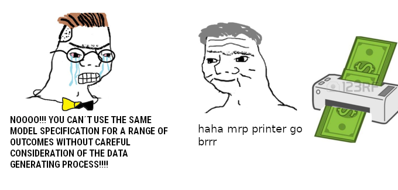

a post-stratification frame for Scottish Parliamentary Constituencies
A cut-down version of the post-2021 election Scottish Election Study data
This does not include:
post-stratification frames for any other jurisdiction
Overall approach
MRP is not complicated. It is a footer, but dinna fash.
About MRP
Origins
Ithiel de Sola Pool (b. 1917, d. 1984)
Early attempts by the Simulmatic Corporation to forecast US presidential elections (1960)
Fictionalized in the thriller novel The 480 (1964)
Key idea: large national surveys allow inferences to be drawn about the behaviours of different voter blocks
Modern treatments
The best modern treatment is (depending on taste)
Park, David K, Andrew Gelman, and Joseph Bafumi. 2004. “Bayesian Multilevel Estimation with Poststratification: State-Level Estimates from National Polls”, Political Analysis 12 (4): 375–85.
Lax, Jeffrey R, and Justin H Phillips. 2009. “How Should We Estimate Public Opinion in the States?” American Journal of Political Science 53 (1): 107–21.
What changed?
Between the 1960 and the 2000s we’ve seen
vast increases in computing power
development of Bayesian modelling and multilevel modelling
MRP is now a mature technology, and new papers tend to focus on marginal improvements which deal with better modelling or better ways to deal with post-stratification
MRP remains computationally intensive (model runs of up to several hours)
The multilevel element
In studies of electoral behaviour: survey respondents are individuals (level 1) nested in electoral districts (level 2)
These electoral districts have effects on the people in them (context matters)
In MRP models, these effects are modelled as random intercepts
Why random intercepts?
Our predictions are more accurate because we’ve reduced variance (at the cost of bias)
We don’t really care about the units per se
This approach also extends to demographic groups (education, age, ethnicity, sex), with a few more philosophical qualms
Random intercepts, but you’ll also hear about partial pooling or regularization
The regression element
Any regression model can be turned into a MRP model
There are some techniques for small area estimation which don’t use regression but instead use tree-based models (Bisbee 2019), but these (i) all use some form of regularization; and (ii) have had mixed success (Goplerud 2023)
Most MRP models are binary or categorical models
Continuous models (e.g., for feeling thermometers) are rare; ordinal or bivariate models are rarer still
The post-stratification element
What distinguishes MRP is the idea that we use our models to generate predictions (for discrete types) which we then aggregate
Example: 5,040 voter “types” defined by
seven age groups, times
two sexes, times
five educational qualifications, times
72 constituencies
This requires us to know the joint distribution of type-defining attributes
How it’s usually applied (1)
Number of area level units: between 4 (Canadian metropolitan areas) and 9,981 (US Census administrative units) with a median value of 50
Sample size: Median sample size of ~7,500, IQR of ~2,500 to ~55,000
Sample size/areas: median ratio of 87 respondents/unit
A comma separated values file containing information on the list votes of selected parties (and those who did not vote) expressed as a proportion of the voting age population.
This is the constituency-level analogue of the “past_list_vote” variable in the post-stratification frame.
ses21_postelection_subset.csv
A comma separated values file with 3,442 observations on the following variables:
age: an integer
birthSex: a character variable with two unique values
profile_education_level: a character variable with 20 unique values
ethnicity_new: a character variable with 17 unique values
ethnicity_new1617: as above, but for a small number of top-up respondents
w2_voted: whether or not the respondent voted in the 2021 SP election
w2_vb15: the party for which the respondent voted
w2_uk10: the respondent’s view on Scottish independence (1 = ‘Yes’; 2 = ‘No’; 3 = ‘Would not vote’; 4 = ‘Don’t know’)
psf.csv
A comma separated values file; a post-stratification frame, as discussed above.
R packages used
I’ll be using the following packages:
tidyverse: the general utility package
here: for consistently dealing with file locations
lme4: for frequentist multilevel models
brms: for Bayesian models of all kinds
Tidying the data
library(tidyverse)library(here)here::i_am("R/001_tidy_data.R")ind <-read.csv(here::here("data", "ses21_postelection_subset.csv"))ps <-read.csv(here::here("data", "psf.csv"))### Convert post-stratification variables to factors### This will help checkingps <- ps |>mutate_at(vars(age, sex, quals, ethnicity, past_list_vote, geogcode), factor)
ind <- ind |>mutate(quals =case_when(profile_education_level %in%c("University or CNAA higher degree (e.g. M.Sc, Ph.D)","University or CNAA first degree (e.g. BA, B.Sc, B.Ed)","University diploma","Teaching qualification (not degree)","Nursing qualification (e.g. SEN, SRN, SCM, RGN)") ~"NVQ4+", profile_education_level %in%c("onc","ONC","GCE A level or Higher Certificate","Scottish Higher Certificate") ~"NVQ3 only", profile_education_level %in%c("Recognised trade apprenticeship completed") ~"Trade Apprenticeships", profile_education_level %in%c("Youth training certificate/skillseekers","City & Guilds certificate - advanced","Scottish Ordinary/ Lower Certificate","CSE grade 1, GCE O level, GCSE, School Certificate") ~"NVQ2 only", profile_education_level %in%c("Clerical and commercial","City & Guilds certificate","CSE grades 2-5") ~"NVQ1 only", profile_education_level %in%c("No formal qualifications","Don't know","Prefer not to say") ~"no qualifications (NVQ)", profile_education_level %in%c("Other technical, professional or higher qualification") ~"other qualifications (NVQ)",TRUE~NA_character_))ind <- ind |>mutate(quals =factor(quals,levels =levels(ps$quals)))
Notes on tidying
We drop missing observations; we could use single-shot imputation with Amelia
We drop from 3,442 observations to 2,841 observations (mostly due to missingness on the outcome)
We make some assumptions about ethnicity and past vote behaviour at some points
“Don’t knows” are “white” and “did not vote” respectively
Your thoughts on this welcome!
Modelling the model with glmer
library(tidyverse)library(here)library(lme4)set.seed(3082)here::i_am("R/002_mrp_with_glmer.R")### Read in the post-stratification frameps <-read.csv(here::here("data","psf.csv"))ps <- ps |>mutate(ethnicity =coalesce(ethnicity, "white"))### Check these are all factorsps <- ps |>mutate_at(vars(c(geogcode, age, sex, quals, ethnicity, past_list_vote)), factor)### Read in the individual dataind <-readRDS(here::here("working","tidy_ind_data.rds"))### Read in the aggregate-level predictorsagg <-read.csv(here::here("data", "2021_results_over_vap.csv"))### Merge on to both sets of dataind <-left_join(ind, agg, by ="geogcode")ps <-left_join(ps, agg, by ="geogcode")
Modelling the model with glmer (2)
f <- dv ~ (1|geogcode) + (1|age) + sex + (1|quals) + ethnicity + (1|past_list_vote) + SNP + Labmod <-glmer(f, data = ind, family = binomial)
ChatGPT translation:
xtmelogit dv sex ethnicity SNP Lab || geogcode: || age: || quals: || past_list_vote:, ///
covariance(unstructured) family(binomial) link(logit)
Post-stratifying
ps$mu <-predict(mod, newdata = ps)ps$predprob <-plogis(ps$mu)### Aggregate up to constituencyconsty <- ps |>group_by(geogcode, ScotPcon2014) |>summarize(mean_indy_support =weighted.mean(predprob, w8),.groups ="drop")
geogcode ScotPcon2014 mean_indy_support
<chr> <chr> <dbl>
1 S16000111 Ettrick, Roxburgh and Berwickshire 0.313
2 S16000135 Orkney Islands 0.337
3 S16000097 Dumfriesshire 0.338
4 S16000078 Aberdeenshire West 0.347
5 S16000114 Galloway and West Dumfries 0.373
6 S16000081 Angus North and Mearns 0.385
What’s wrong with this?
There’s nothing wrong with this model; it does the job, and quickly
However, we have no measures of uncertainty, and
… adding another constituency-level predictor introduces problems of perfect separation (Zorn 2005)
Both of these problems can be dealt with using Bayesian models
Modelling with brms
mod <-brm(f,family = bernoulli,data = ind,cores =4,chains =4,prior =set_prior("normal(0, 1)", class ="b"),control =list(adapt_delta =0.9),warmup =2000,iter =2250 )
Post-stratifying
preds <-posterior_epred(mod,newdata = ps,ndraws =100)### transpose them so that the predictions are on the columnspreds <-t(preds)preds <-as.data.frame(preds)ps <-cbind(ps, preds)ps <- ps |>pivot_longer(cols =starts_with("V"),names_to ="iter",values_to ="predprob")
ScotPcon2014 indy_support_mean indy_support_lo indy_support_hi
<chr> <dbl> <dbl> <dbl>
Ettrick, Roxburgh… 0.320 0.271 0.358
Dumfriesshire 0.341 0.301 0.381
Orkney Islands 0.346 0.302 0.387
Aberdeenshire West 0.352 0.312 0.386
Galloway and West… 0.375 0.336 0.404
Angus North and M… 0.385 0.327 0.420
Things to note
We can include interactions, but it’s best to include them manually
Memory requirements can become more demanding with more complicated post-stratification frames
I haven’t addressed categorical outcomes
This code will work for any dichotomous or continuous outcome (or any outcome that can be treated as such)

Note
Let’s have a discussion. Can you envisage using MRP? How could MRP be useful to you?
References
Bisbee, James. 2019. “BARP: Improving Mister P Using Bayesian Additive Regression Trees.”American Political Science Review 113 (4): 1060–65.
Goplerud, Max. 2023. “Re-Evaluating Machine Learning for MRP Given the Comparable Performance of (Deep) Hierarchical Models.”American Political Science Review, 1–8.
Hanretty, Chris, Benjamin E Lauderdale, and Nick Vivyan. 2018. “Comparing Strategies for Estimating Constituency Opinion from National Survey Samples.”Political Science Research and Methods 6 (3): 571–91.
Lax, Jeffrey R, and Justin H Phillips. 2009. “How Should We Estimate Public Opinion in the States?”American Journal of Political Science 53 (1): 107–21.
Lobo, Ben. 2021. “How Can We Improve Multilevel Regression and Post-Stratification (MRP) Estimate Accuracy?” PhD thesis, Royal Holloway, University of London.
Park, David K, Andrew Gelman, and Joseph Bafumi. 2004. “Bayesian Multilevel Estimation with Poststratification: State-Level Estimates from National Polls.”Political Analysis 12 (4): 375–85.
Rosenman, Evan TR, Cory McCartan, and Santiago Olivella. 2023. “Recalibration of Predicted Probabilities Using the ‘Logit Shift’: Why Does It Work, and When Can It Be Expected to Work Well?”Political Analysis, 1–11.
Zorn, Christopher. 2005. “A Solution to Separation in Binary Response Models.”Political Analysis 13 (2): 157–70.